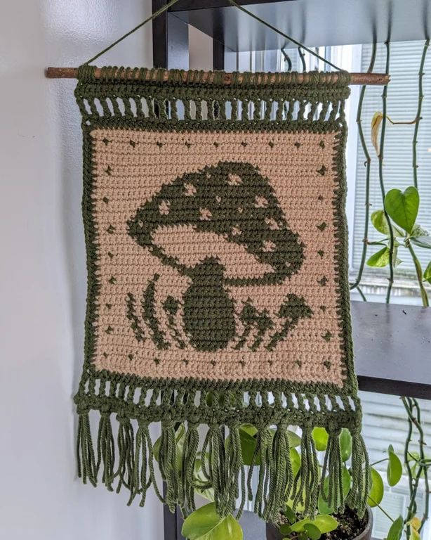
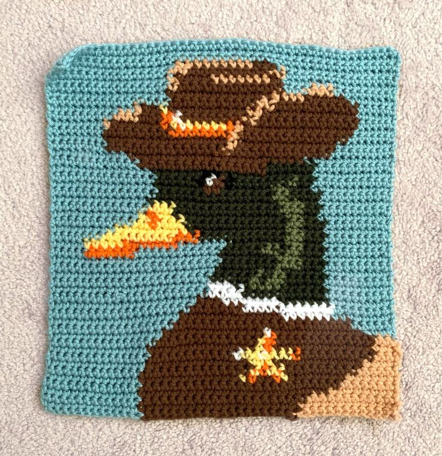
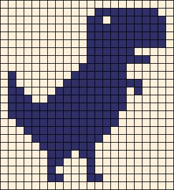
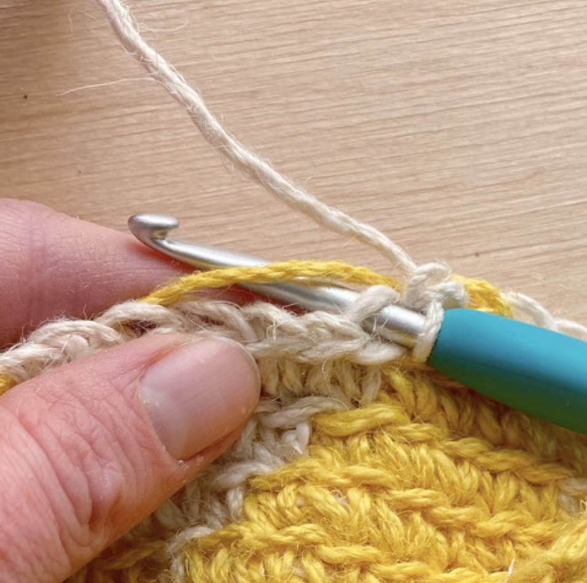

Tapestry Crochet
Tapestry crochet is a technique used to make crochet projects.
You mainly use siple pixel art as your guideline. It is the crochet equivalent to fair-isle knitting, because you change colors to create a pattern.
Here are some examples of tapestry crochet:


Tapestry looks pretty difficult when you look at it, but in reality its fairly simple. Here's how to do it!
Following patterns
As with most colourwork techniques, the pattern is made by following a chart, on which each square symbolises one stitch.
Pattern charts are read from the bottom upwards, in the same direction that you create the fabric.
If you're working in the round, you follow each row of the chart from right to left.
But if you're working flat, you follow all odd rows from right to left, and work all even rows from left to right.
The patter is almost always pixel art, an example of that is shown below.
If you're a beginner, i reccomend only using pixel art with two colors at first.
Here's an example of a pattern with only two colors:

Changing colors
The only rule you must stick to when working in tapestry crochet is to always join the new shade of yarn into the last stitch of the old shade.
This will ensure your colour changes stay nice and neat. To make it look neat, make sure to hold the yarn you don't use in the back of your project.
Step-by-step instruction
Step 1
Firstly, chain the amount of stitches you need with your fist color of yarn. This will be the base of your project.
On the first row of your tapestry crochet, start working with your first shade in single crochet stitches
Step 2
Change to the new shade by pulling the contrast yarn through the loops left on the hook.
Step 3
Continue working with the new shade, making sure your stitches are made around the previous shade.
To do this, hold the previous shade of yarn on top of the stitches from the row below like shown below.

Step 4
Repeat these steps until the end of your pattern. once you're done, you can cut the end of your yarn and tie a knot or fasten off.